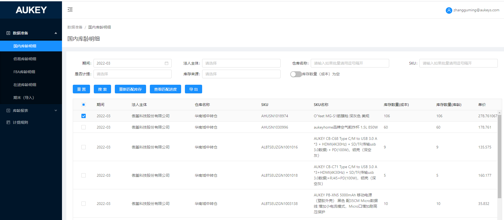

需求说明
模块：存货核算---国内库龄明细/佰易库龄明细/FBA库龄明细/在途库龄明细
1.增加定时任务，自动同步新增数据，对比成本核算模块的数据，如果存货核算明细没有，但是成本核算模块有，则同步在库龄明细模块插入一条数据，逻辑如下：
a.国内库龄明细---国内底稿-成本核算
b.佰易库龄明细--成本核算/合并报表--期末（汇总）-佰易底稿 +手工导入期末-来源为佰易
c.FBA库龄明细 ---成本核算/合并报表--期末（汇总）-FBA底稿 +手工导入期末-来源为FBA
d.在途库龄明细 ---成本核算/合并报表--期末（汇总）-在途底稿+手工导入期末来源为在途
注：2-1：abc这3种同步的数据，默认库龄为1个月 d这种默认为3个月
2-2：定时任务默认是当前库龄同步定时任务后1-3个小时内，研发设置时间即可
2.按钮“重新匹配库存”操作的时候增加逻辑，如果识别到对应维度的sku不存在数据的话，则插入数据，对应插入数据逻辑同上；